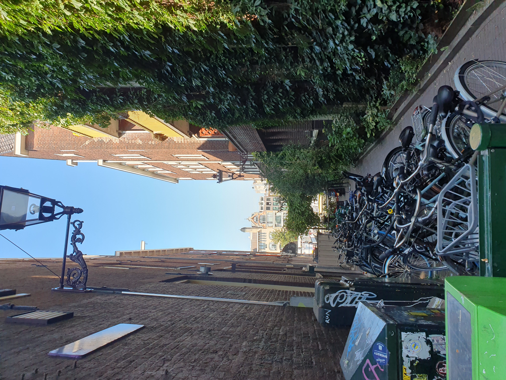
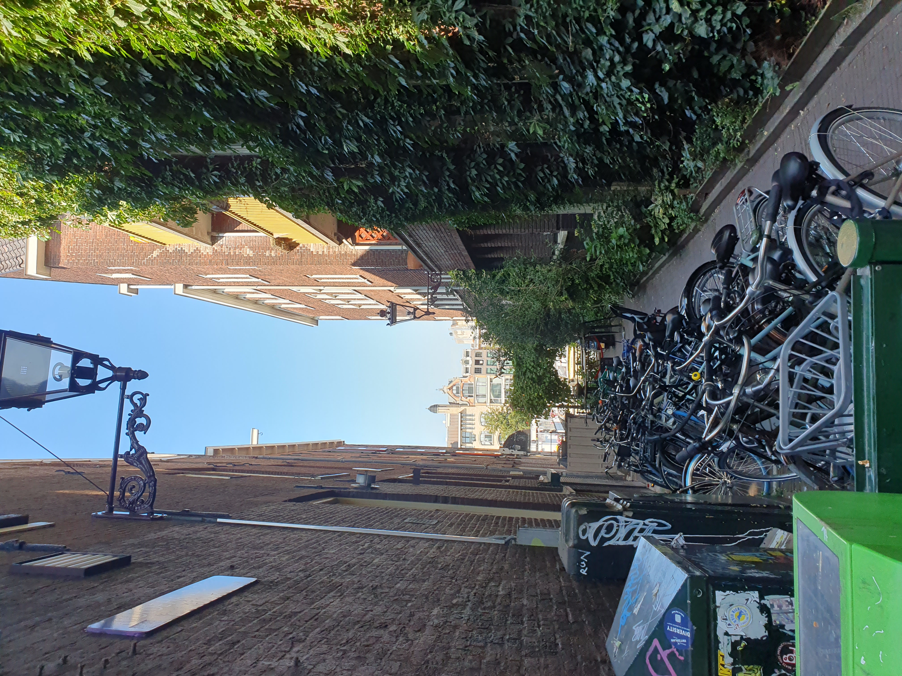
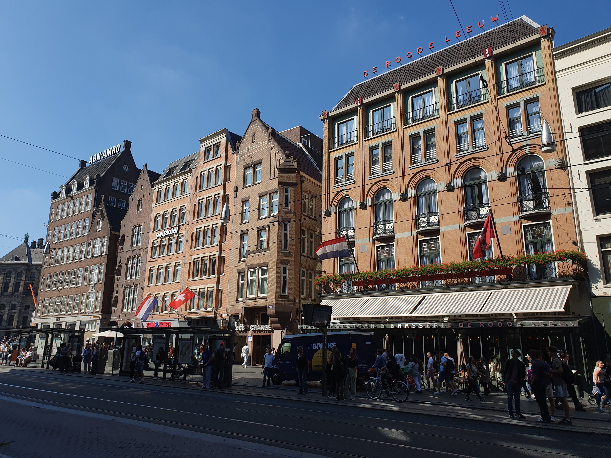
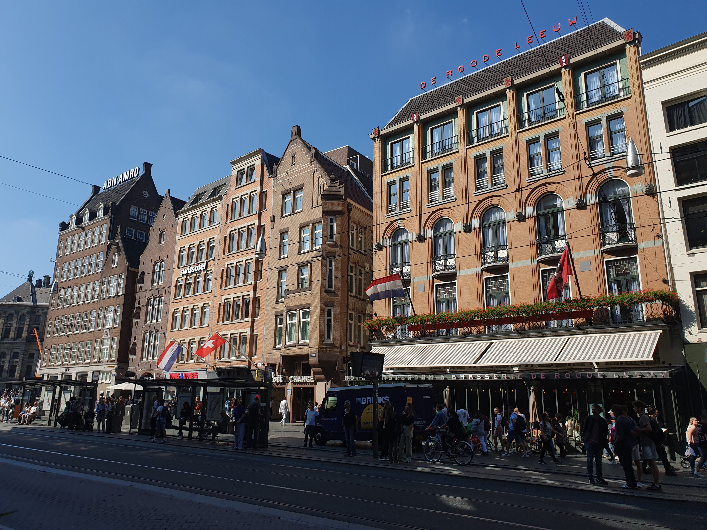

Tour information :
Discover the charm and culture of Amsterdam on an exciting two-day tour tailor-made for non-Dutch students.
This adventure promises a unique blend of historical exploration, picturesque canals, and vibrant nightlife.
Day one kicks off with a visit to iconic landmarks like the Anne Frank House and the Van Gogh Museum, where you'll immerse yourself in art and history.
Afterward, explore the charming Jordaan neighborhood and savor traditional Dutch treats in cozy cafes.
As the sun sets, the evening comes alive with a guided canal cruise, allowing you to witness Amsterdam's stunning architecture illuminated along the waterways.
Enjoy a delicious Dutch dinner at a canal-side restaurant, then experience the city's nightlife in the famous Leidseplein square.
Day two invites you to embrace the cycling culture of Amsterdam with a bike tour through the city's hidden gems.
You'll also have the chance to shop at vibrant markets and capture the essence of Amsterdam's vibrant street scenes.
Whether you're a history buff, art enthusiast, or simply a lover of new experiences, this two-day tour promises unforgettable memories in the heart of the Netherlands. Amsterdam awaits you!
Information about our company :
TORA is a government-sponsored volunteer travel company that offers an exceptional opportunity for adventure seekers.
We provide an enchanting two-day tour to the vibrant city of Amsterdam, tailored exclusively for third-year and higher
non-Dutch university students. Amsterdam's rich culture and history await exploration, and TORA is your gateway to this remarkable experience.
During your two-day journey, you'll immerse yourself in the city's iconic landmarks, delve into world-class art and history at renowned museums, and savor the flavors of Dutch cuisine.
Our tour package offers special pricing, with students paying only 40% for tickets to Amsterdam. TORA ensures that your Amsterdam adventure is not only memorable but also budget-friendly.
Join us and create unforgettable memories in this enchanting Dutch metropolis.
As mentioned previously, you'll only need to cover a portion of the ticket costs to Amsterdam, and we'll provide every participant with day tickets for public transport.
Additionally, we offer three meals a day and comfortable hotel accommodations. However, it's advisable to bring some extra spending money for souvenirs and personal expenses.
Amsterdam is calling, and TORA is here to answer that call with an exceptional student experience.

 

 
